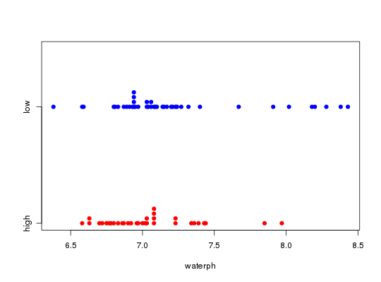

Data for Exercises 6.40, 6.59, 7.10, and 7.35
A data frame with 75 observations on the following 5 variables.
high lowKitchens, L. J. (2003) Basic Statistics and Data Analysis. Duxbury
str(Smokyph)#> 'data.frame': 75 obs. of 5 variables: #> $ waterph: num 7.91 7.14 6.81 6.97 7.21 6.94 6.59 6.94 6.94 8.43 ... #> $ code : Factor w/ 2 levels "high","low": 2 2 2 2 2 2 2 2 2 2 ... #> $ elev : num 0.244 0.375 0.567 0.512 0.408 0.512 0.506 0.488 0.488 0.232 ... #> $ SRES1 : num 1.127 -0.551 -0.939 -0.661 -0.294 ... #> $ FITS1 : num 7.47 7.36 7.18 7.23 7.33 ... #>attach(Smokyph) t.test(waterph,mu=7)#> #> One Sample t-test #> #> data: waterph #> t = 2.7516, df = 74, p-value = 0.007452 #> alternative hypothesis: true mean is not equal to 7 #> 95 percent confidence interval: #> 7.038511 7.240689 #> sample estimates: #> mean of x #> 7.1396 #> #>#> #> One-sample Sign-Test #> #> data: waterph #> s = 42, p-value = 0.2954 #> alternative hypothesis: true median is not equal to 7 #> 95 percent confidence interval: #> 6.954832 7.085168 #> sample estimates: #> median of x #> 7.03 #> #>#> Conf.Level L.E.pt U.E.pt #> Lower Achieved CI 0.9361 6.9600 7.0800 #> Interpolated CI 0.9500 6.9548 7.0852 #> Upper Achieved CI 0.9630 6.9500 7.0900 #>tapply(waterph,code,mean)#> high low #> 7.039697 7.218095 #>stripchart(waterph~code,method="stack",pch=19,col=c("red","blue"))qqnorm(waterph[code=="low"])qqnorm(waterph[code=="high"])t.test(waterph[code=="low"],waterph[code=="high"])#> #> Welch Two Sample t-test #> #> data: waterph[code == "low"] and waterph[code == "high"] #> t = 1.859, df = 70.875, p-value = 0.06718 #> alternative hypothesis: true difference in means is not equal to 0 #> 95 percent confidence interval: #> -0.0129577 0.3697542 #> sample estimates: #> mean of x mean of y #> 7.218095 7.039697 #> #>t.test(waterph[code=="low"],waterph[code=="high"],conf.level=.90)$conf#> [1] 0.01845818 0.33833836 #> attr(,"conf.level") #> [1] 0.9 #>detach(Smokyph)